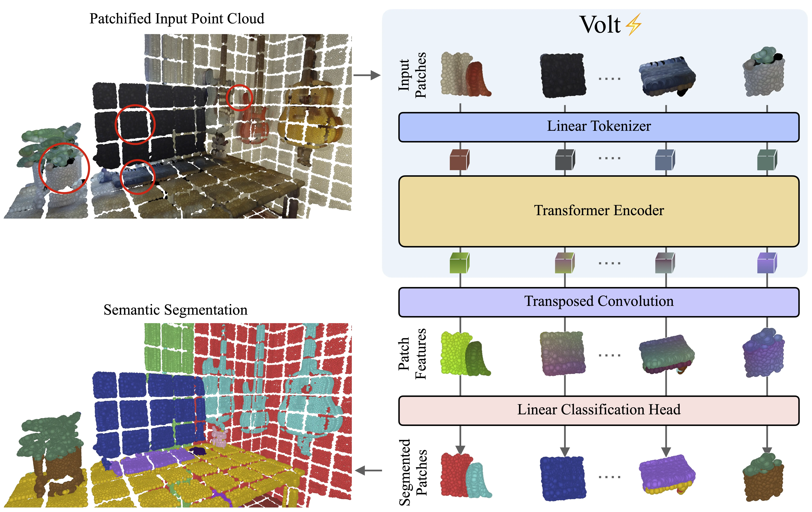
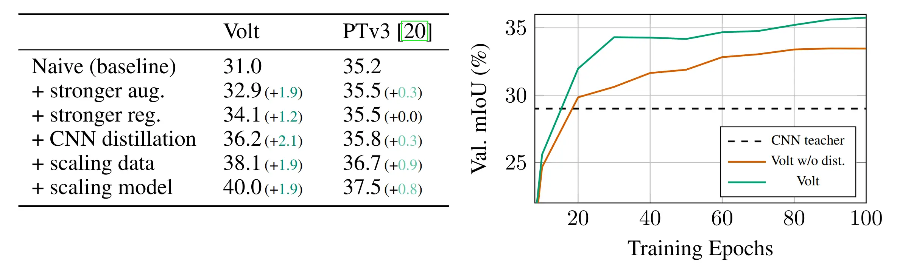
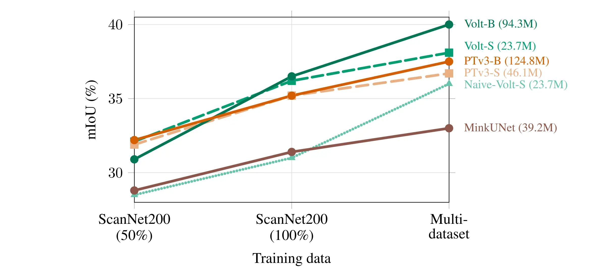
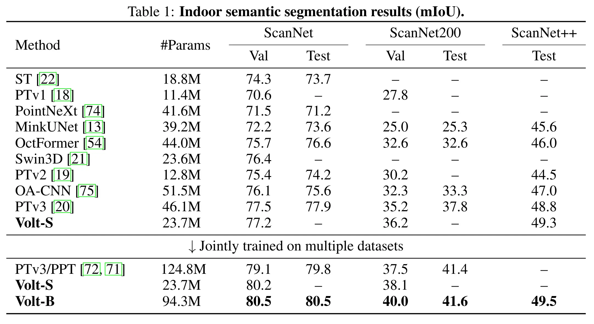
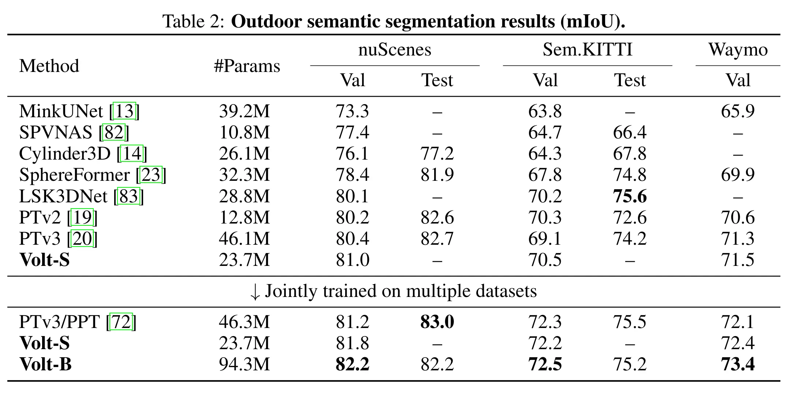
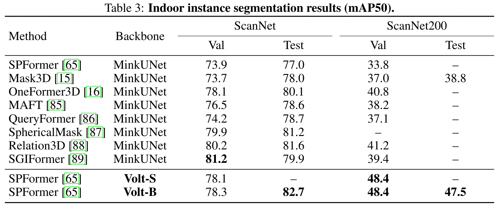

Transformers have become a common foundation across deep learning, yet 3D scene understanding still relies on specialized backbones with strong domain priors. This keeps the field isolated from the broader Transformer ecosystem, limiting the transfer of new advances as well as the benefits of increasingly optimized software and hardware stacks. To bridge this gap, we adapt the vanilla Transformer encoder to 3D scenes with minimal modifications. Given an input 3D scene, we partition it into volumetric patch tokens, process them with full global self-attention, and inject positional information via a 3D extension of rotary positional embeddings. We call the resulting model the Volume Transformer (Volt) and apply it to 3D semantic segmentation. Naively training Volt on standard 3D benchmarks leads to shortcut learning, highlighting the limited scale of current 3D supervision. To overcome this, we introduce a data-efficient training recipe based on strong 3D augmentations, regularization, and distillation from a convolutional teacher, making Volt competitive with state-of-the-art methods. We then scale supervision through joint training on multiple datasets and show that Volt benefits more from increased scale than domain-specific 3D backbones, achieving state-of-the-art results across indoor and outdoor datasets. Finally, when used as a drop-in backbone in a standard 3D instance segmentation pipeline, Volt again sets a new state of the art, highlighting its potential as a simple, scalable, general-purpose backbone for 3D scene understanding.





@article{yilmaz2026Volt,
title = {{Volume Transformer: Revisiting Vanilla Transformers for 3D Scene Understanding}},
author = {Yilmaz, Kadir and Kruse, Adrian and Höfer, Tristan and de Geus, Daan and Leibe, Bastian},
journal = {arXiv preprint arXiv:},
year = {2026}
}